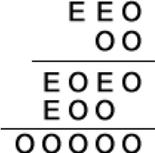

Decipher the following puzzle. All the numbers indicated by the letter E, are even $($ not necessarily equal $)$; all the numbers indicated by the letter O are odd $($ also not necessarily equal $)$. 
Why can the first digit of the second factor not be 1? Why can it not be more than 3?
For the convenience of further reasoning, we replace all even numbers with vowels, and odd ones with consonants, bearing in mind that the same number can correspond to different letters. We will not use the letter O to avoid confusing it with zero. Our puzzle will look like the picture. In the future, we will use the parity of vowels and odd-numbered consonants, without specifying this specifically.
C $>$ 1 $($ for C = 1, the numbers AEB and UNK would be equal to each other, and this is impossible, since in one the second digit is even, and in the other it is odd $)$. C = 3, A = 2 $($ for C $>$ 3 or A $>$ 2, the product $AEB \times C$ will be a four-digit number $)$. I = 2 $($ for A = 2, I can not be greater than 2 $)$. It follows that D = 9 $($ for a lower D value, the expression $AEB \times D$ will be less than 2100, and IFUG $>$ 2100, since F corresponds to an odd number, so it is not equal to 0 $)$. Y = 8 $($ otherwise the entire product will not be a five-digit number $)$. E = 8 $($ if E $<$ 8, then YNK $<$ 810). F = 5 $($ when B varies from 1 to 9, the number of IFUG will vary from 2529 to 2601 $)$, it follows that B $<$ 9. H = 5 $($ with B changing from 1 to 7, the number of YNC will vary from 843 to 861 $)$. K = 5 $($ otherwise the number 85K will not be divisible by 3 $)$. Now you can restore the whole example $($ see figure $)$.